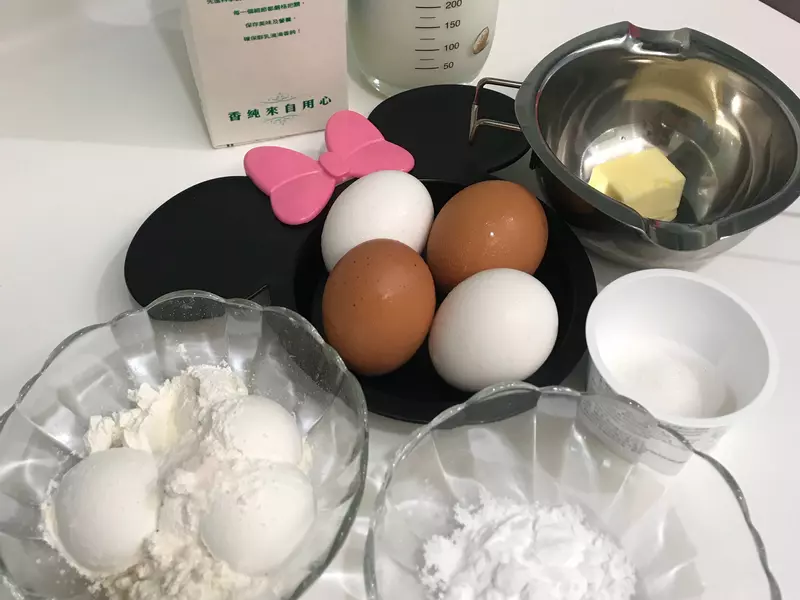
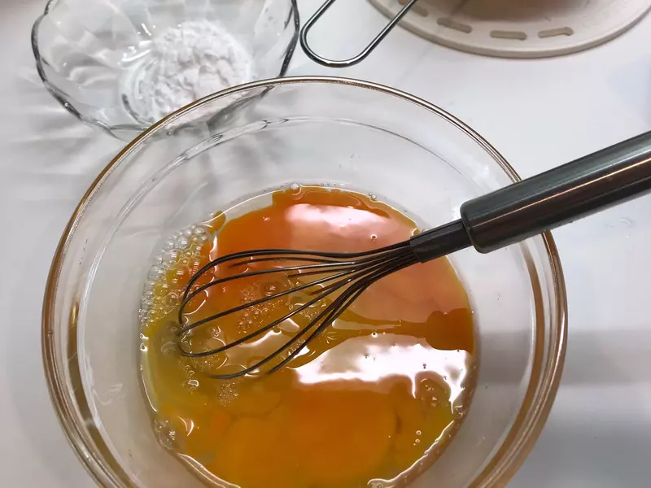
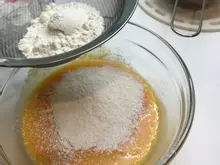
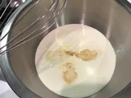

法式千層蛋糕
第一次做就得滿分～口感滑嫩香濃，餅皮也非常軟棉搭配著香草鮮奶油層層堆疊的口感，香氣特別濃郁...
看似簡單～確很燒時間～是一道要非常有耐性的甜點！難怪我愛的名店Landy M一份蛋糕要2600～這麼繁複的工序貴確實是有它的道理在！但自己動手做更有趣❤️給自己打95分～～
❤️ ❤️❤️ 因為愛吃甜食又怕胖～所以食材的比例都有做調整～希望能吃的美味也能吃的健康！
看似簡單～確很燒時間～是一道要非常有耐性的甜點！難怪我愛的名店Landy M一份蛋糕要2600～這麼繁複的工序貴確實是有它的道理在！但自己動手做更有趣❤️給自己打95分～～
❤️ ❤️❤️ 因為愛吃甜食又怕胖～所以食材的比例都有做調整～希望能吃的美味也能吃的健康！
份量
6 人份
時間
180 分鐘
食材
-
雞蛋4顆
-
砂糖23g
-
低粉100g
-
玉米澱粉25g
-
牛奶410ml
-
黃油10g
-
鹽巴一小撮
內餡鮮奶油
-
鮮奶油300ml
-
細紗糖25g
-
香草精數滴
-
所有材料秤好如下
-
將4顆蛋與砂糖一起打散，加入一撮鹽吧
-
將低粉、玉米澱粉過篩後攪拌
-
將牛奶分成兩次慢慢地倒入攪拌均勻
-
然後過篩掉不要的雜質與麵疙瘩，然後就完成麵糊了！放進冰箱冰兩個小時，讓麵糊變得更滑嫩細緻！
-
 我使用的大概是6吋的鍋子不沾鍋,鍋底加熱塗上少許的黃油防沾黏～一湯匙的量讓餅皮分布均勻的在鍋子上，使用最小火，讓鍋子邊慢慢的左右晃動！等到表面有浮出一些泡泡了就能翻面！等待個10-15秒即可～等待時也要左右陸續翻動哦， 免得紋路太深⋯⋯
我使用的大概是6吋的鍋子不沾鍋,鍋底加熱塗上少許的黃油防沾黏～一湯匙的量讓餅皮分布均勻的在鍋子上，使用最小火，讓鍋子邊慢慢的左右晃動！等到表面有浮出一些泡泡了就能翻面！等待個10-15秒即可～等待時也要左右陸續翻動哦， 免得紋路太深⋯⋯ -
內陷鮮奶油
-
香草精少許打發鮮奶油（電動）
-
糖粉兩次下，打到鸚嘴即可～不用去打發哦
-
一層薄皮一層鮮奶油，我共做了18層！因為已經很高很漂亮了
-
18階呈現出來就是特別的高雅！辛苦值得❤️
-
～這配方總共28張皮剩下的10張我就做個10階的千層也很美味！下次應該對切給他堆疊到20階，口感會更加豐富美味❤️